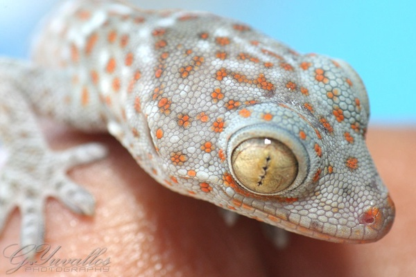
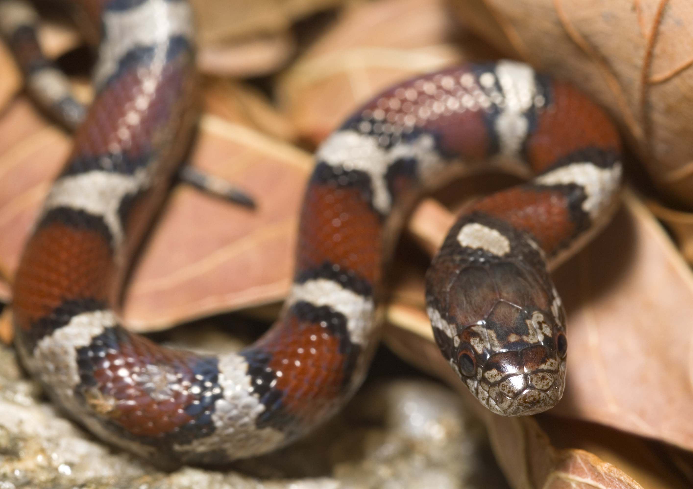
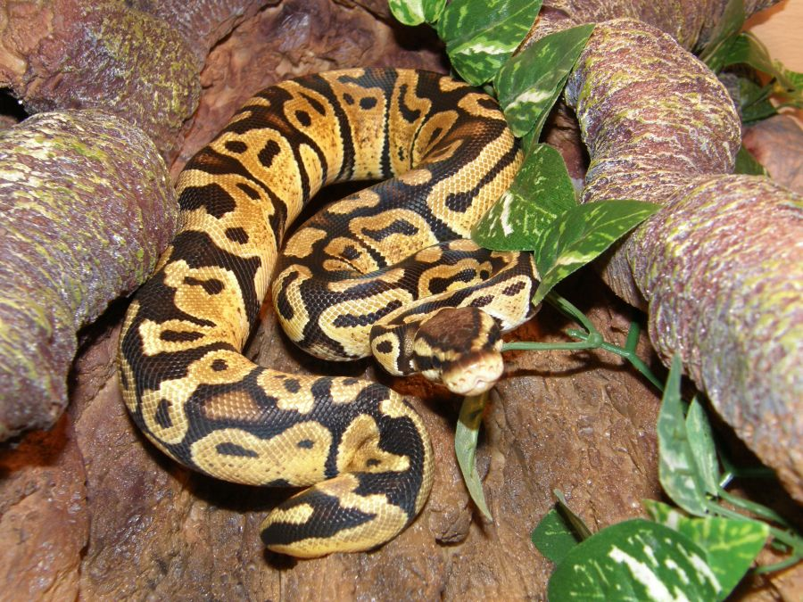
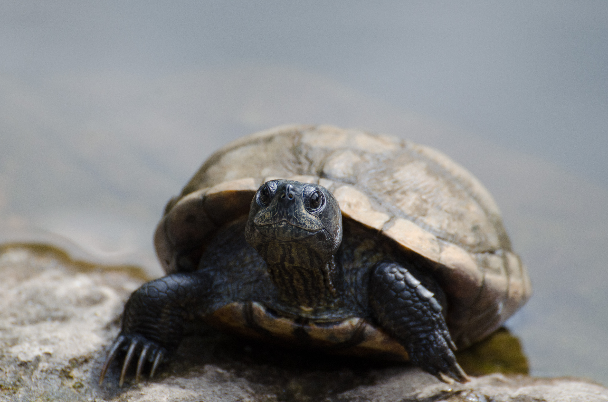

Rango
Rango is good with kids but too many people will make him skittish.
Mushu
Milk snakes like Mushu are nocturnal, so don't expect to play too much during the day. He likes to climb and swim too, so he would enjoy a small pond in the habitat.

Pascal
Pascal gets stressed out if you handle him too much. He likes having his own space with branches to climb.

Nagini
Nagini likes to be held and prefers a warm environment with some water to soak in.
Toothless
Toothless is friendly and has a long life ahead of him. Turtles have a fairly simple diet, but you need to be willing to take care of him for a while.